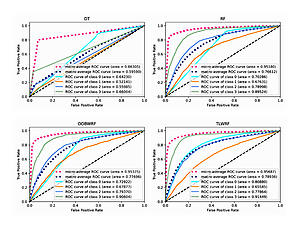
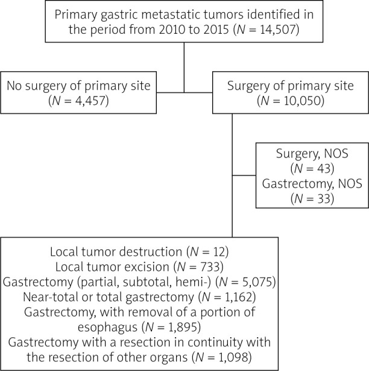

XU Cheng
徐 成Researcher | Data Scientist
Researcher | Data Scientist
|
 |
Cheng Xu, Jing Wang, TianLong Zheng, Yue Cao, Fan Ye. Archives of Medical Science 2021 [Paper] / [PDF] / [PubMed] |
|
 |
Cheng Xu, Qingling Chen, Fan Ye, Qi Fan, Qing Wang. Gastroenterology Review 2021 [Paper] / [PDF] / [PubMed] |